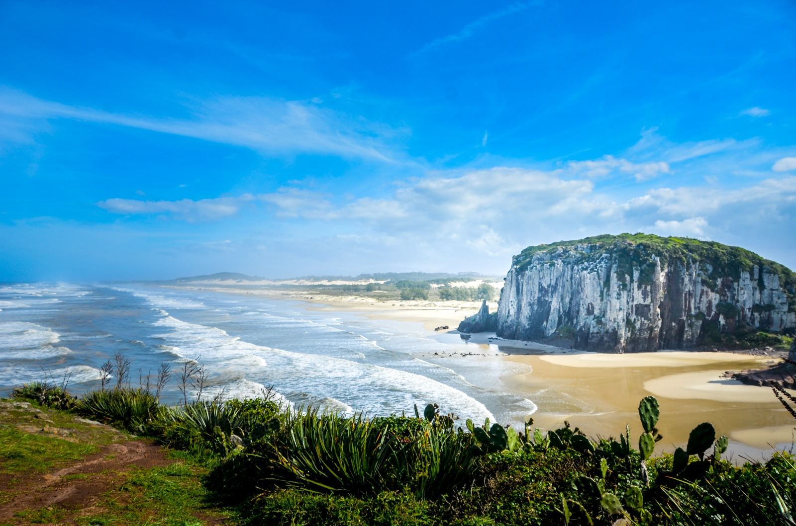
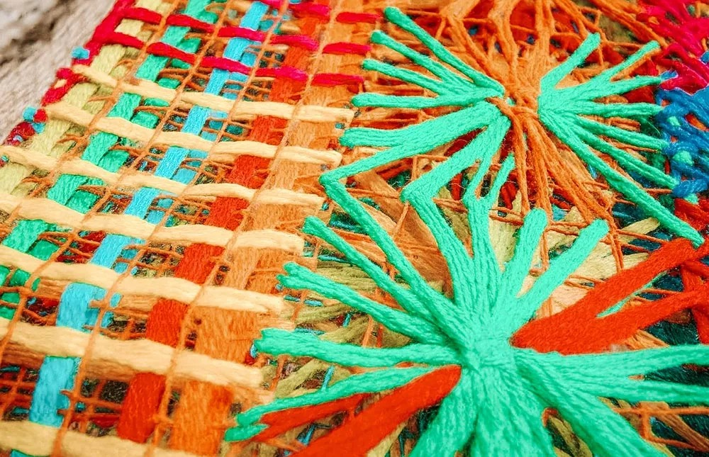
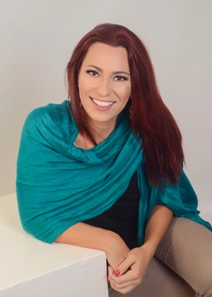
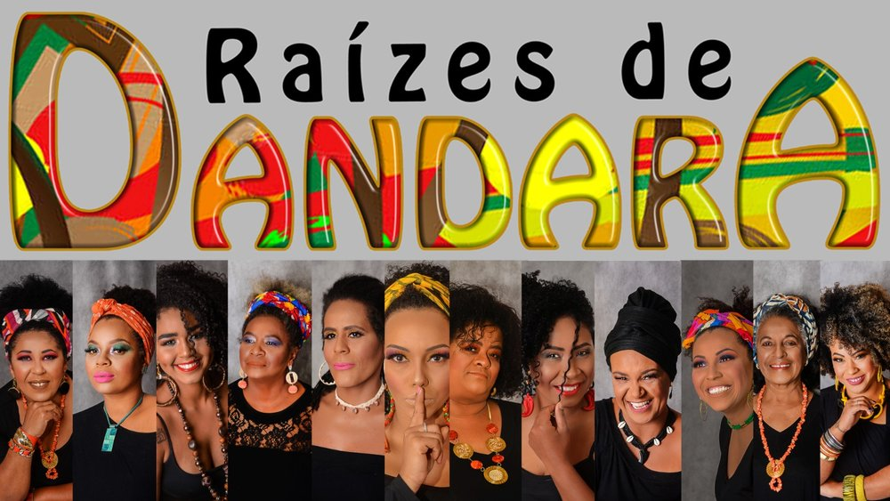
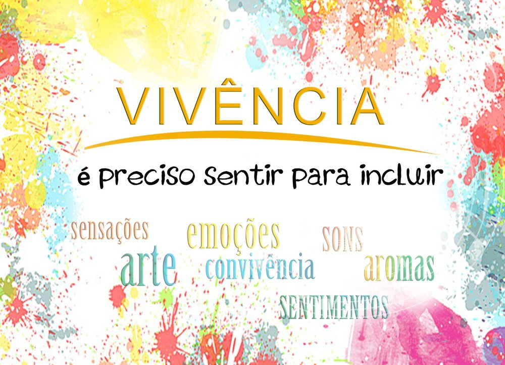

Um projeto que usa a fotografia para revelar as histórias, as pessoas e os saberes por trás da produção local de Torres.
Existem histórias acontecendo todos os dias. Pessoas criando. Produzindo. Empreendendo. Transformando. Mas muitas dessas histórias ainda permanecem invisíveis.
É aí que entra este projeto.
Torres e região possuem talentos, produtos, saberes e histórias que fazem parte da nossa identidade. Mas muitos produtores ainda têm dificuldade de comunicar seu valor, apresentar sua história e alcançar novos públicos.

Utilizar a fotografia como ferramenta de valorização, comunicação e conexão entre produtores locais e público.
Um processo simples, repetido produtor a produtor, até formar um retrato coletivo de Torres e região.
Mapear produtores, artesãos e iniciativas locais por segmento, selecionar seus representantes para serem fotografados.
Criar imagens profissionais que mostrem produto, processo e pessoa.
Transformar cada produção em uma história.
Divulgar essas histórias e aproximá-las do público.
"Por que esse projeto e não simplesmente uma divulgação?"
Porque não é só fotografar.
É dar significado à imagem.
"Quando mudamos a forma de olhar, mudamos também a forma de valorizar."

Sou Tina Fon, fotógrafa há mais de 15 anos, com formação em Fotografia e Marketing, e há 11 anos atuo em Torres, RS, e região.
Minha fotografia nasceu do desejo de registrar histórias com sensibilidade, autenticidade e respeito à identidade, ao estilo e às vivências de cada pessoa fotografada.
Acredito que cada ensaio é uma oportunidade de eternizar momentos, revelar histórias e valorizar aquilo que torna cada pessoa única.
Para mim, todo trabalho fotográfico é um ato de amor, escuta e presença. É estar verdadeiramente disponível para o outro e transformar experiências em imagens que contam histórias — histórias que merecem ser vistas, reconhecidas e lembradas.
Atuo principalmente com ensaios fotográficos de pessoas em diferentes fases da vida, sempre buscando criar imagens que tenham significado e representem verdadeiramente quem está diante da minha câmera.
Ao longo dessa trajetória, também desenvolvi projetos que utilizam a fotografia como instrumento de expressão, inclusão, valorização e reflexão, entre eles:

Raízes de Dandara Faces do Amor Leitura, um prazer em todas as idades
Vivência — é preciso SENTIR para incluirEsses projetos reforçam uma convicção que acompanha minha trajetória: a fotografia pode ir muito além do registro. Ela pode dar visibilidade, despertar novos olhares e ajudar a valorizar pessoas, histórias, talentos e lugares.
E se a fotografia pudesse fazer mais do que registrar pessoas e uma paisagem — e ajudasse a mudar a forma como uma cidade enxerga aquilo que produz?
Essa é a proposta do meu projeto.
Torres e nossa região têm gente, produtores, artesãos e iniciativas com histórias que raramente recebem o reconhecimento que merecem.
Quero usar a fotografia para mudar esse olhar.
Quero revelar quem está por trás das produções locais — os processos, as pessoas, os produtos, a relação com a natureza. Não fotografar produtos: contar histórias.
Um projeto documental com exposições, conteúdos digitais, rodas de conversa e ações educativas, para que ninguém mais olhe do mesmo jeito para o que é feito aqui.
Que olhem para um produto local e pensem:
"Olhares que valorizam — Torres e região pelas mãos de quem produz."
E é aí que entra a fotografia.
Eu quero transformar imagem em reconhecimento,
reconhecimento em valorização
e valorização em movimento.
Porque aquilo que aprendemos a enxergar, aprendemos a valorizar.
E aquilo que valorizamos, ajudamos a preservar e fortalecer.